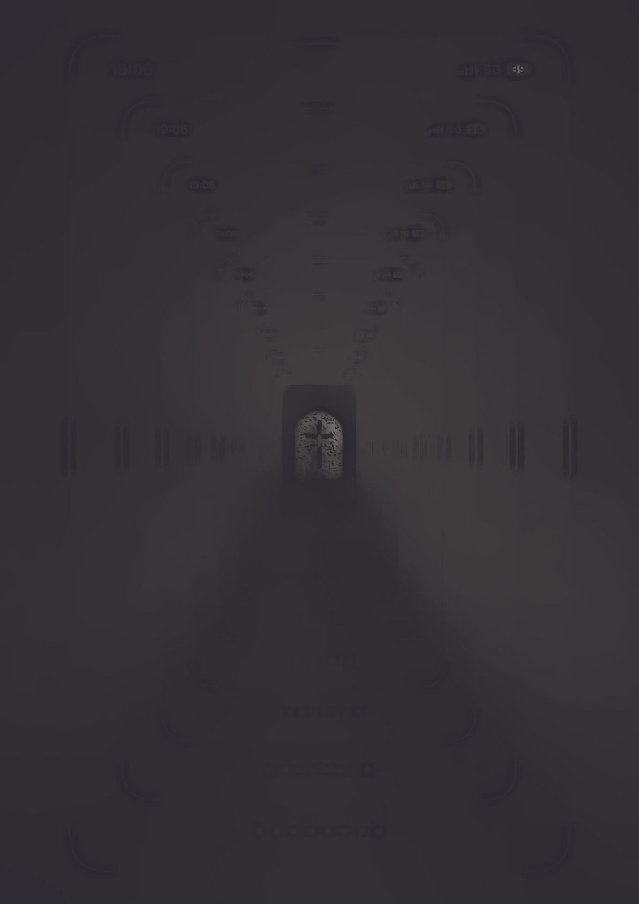

Maxim Jablokov. Frame After Frame. Tbilisi, Georgia
My practice explores how symbols change under pressure and how memory is altered through processes of erosion, displacement, and reconstruction. While I usually work with clay, soil, textiles, and found materials, this work shifts the same inquiry into the digital environment.Here, the image itself becomes the fragile material. Passing through screens, screenshots, compression, and endless self-reproduction, it gradually distances itself from any stable point of origin. Each repetition is not an identical copy but another stage of transformation.The work extends my ongoing interest in damaged symbols and broken systems of transmission. Instead of physical decay, it follows the erosion of representation. The image accumulates traces of every interface it passes through, until the final printed surface becomes another layer in its history rather than its final form. Rather than documenting an object, the work examines how meaning is continuously reconstructed through the conditions of its circulation.
- - -